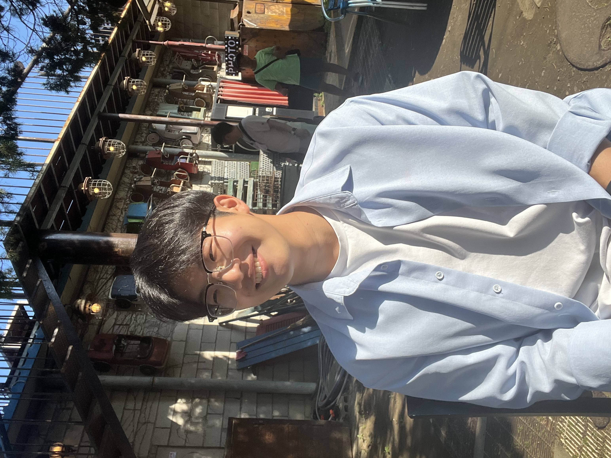

Hi! My name is Junhyoung Chung.
I am currently an external researcher in the Department of Statistics at Seoul National University, where I also obtained my M.S. degree in Statistics, advised by Professor Gunwoong Park. Previously, I obtained my B.S. degree in Statistics and B.A. degree in Economics from the same university.
My academic goal is to develop principled statistical methods that distill essential structures from imperfect and complex data. I aim to bridge the gap between theoretical rigor and practical applicability with the following objectives:
My research initially focused on probabilistic graphical models, specifically designing consistent structure learning algorithms in the presence of measurement error. Recently, I have expanded my interest to optimal transport to robustly align non-Euclidean data structures. I have also carried out applied research introducing statistical models tailored to real-world problem solving.